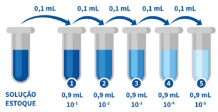
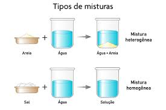
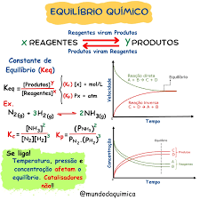

Playlist de Química


Partes por milhão (PPM)
Parte por milhão (ppm) é uma unidade de medida de concentração muito utilizada para expressar quantidades muito pequenas de uma substância (o soluto) dissolvida ou misturada em outra (o solvente ou a mistura total)

Diluição das soluções
A diluição de soluções é o processo de adicionar mais solvente (geralmente água) a uma solução já existente para diminuir a sua concentração. Ao adicionar solvente, a quantidade de soluto (a substância dissolvida) permanece inalterada, mas o volume total da solução aumenta. Consequentemente, a razão entre a quantidade de soluto e o volume total diminui, resultando em uma solução final menos concentrada.
Misturas
Uma mistura é o resultado da associação física de duas ou mais substâncias puras (elementos ou compostos) em que cada componente mantém suas propriedades químicas e identidade original.
Equilíbrio Químico
O Equilíbrio Químico é o estado dinâmico alcançado em uma reação reversível na qual as velocidades da reação direta (formação dos produtos) e da reação inversa (formação dos reagentes) se igualam. Isso não significa que a reação parou, mas sim que os reagentes continuam a formar produtos na mesma proporção em que os produtos voltam a formar os reagentes
O Princípio de Le Chatelier é uma regra fundamental da química que descreve como um sistema em equilíbrio químico responde a uma perturbação externa, como uma mudança na concentração, temperatura ou pressão
Os fatores que deslocam o equilíbrio químico são as perturbações externas que, de acordo com o Princípio de Le Chatelier, forçam o sistema a ajustar-se para estabelecer um novo estado de equilíbrio

O Produto Iônico da Água é a constante de equilíbrio da reação de autoionização da água.
.jpeg)
O Título ou Fração em Massa é uma forma de expressar a concentração de um componente em uma mistura ou solução, indicando a proporção da massa desse componente em relação à massa total da mistura ou solução.

A concentração é uma medida que expressa a quantidade de soluto (a substância dissolvida) presente em uma determinada quantidade de solvente ou de solução.
As soluções químicas, que são misturas homogêneas, são primariamente classificadas com base em três critérios: estado físico, proporção de soluto/solvente e natureza do soluto. Quanto ao estado físico, elas podem ser sólidas (ex.: ligas metálicas), líquidas (ex.: água salgada) ou gasosas (ex.: ar atmosférico).